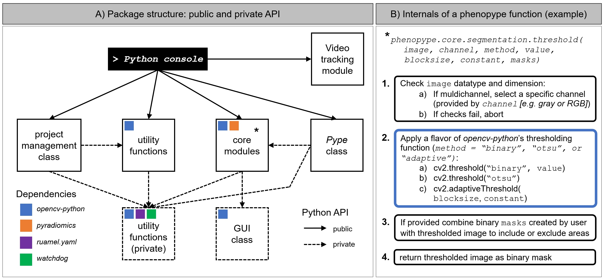

API reference#
The phenopype API#
As most Python packages, phenopype has a Application Programming Interface (API) with a “public” and a “private” part (see https://lwn.net/Articles/795019/). The public part is documented below and includes all Python functions, classes and methods that are available for high throughput image analysis, project management, and image import and export. The private part works in the background and includes helper functions and classes that support the public API. They are not intended to be called directly by users.

The API reference#
The API reference presented here is auto-generated from the docsstrings in each Python function, class or method, using Sphinx. In Python, you can access the content of each docsstring using help(). Most IDEs have a shortcut to access the docsstring, e.g. Ctrl+i in Spyder or Ctrl+Q in PyCharm.
The Project class and its methods:
The Pype-class for high-throughput analysis:
Utility functions, e.g. for loading, saving and viewing images:
All image processing functions:
The video tracking tools: